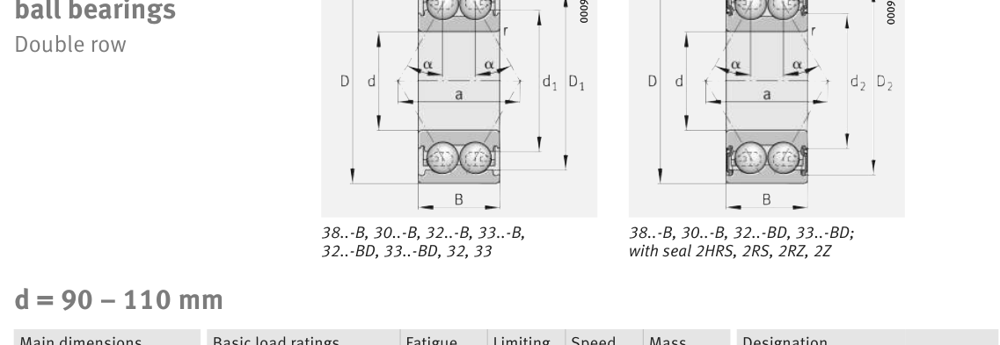

Original catalogue drawing - FAG Schaeffler HR 1, page 344

Scanned from the manufacturer catalogue page listing this part number. All part numbers printed on that table share the same drawing.
Scale cross-section
Blue = inner / outer ring, yellow = rolling element. Drawn to scale from this part's own
dimensions for selection reference only - not a manufacturing or assembly drawing.
Dimension table (mm / inch)
Symbol
Dimension
mm
inch
d
Bore diameter
100
3.937
D
Outside diameter
180
7.0866
B
Inner-ring / bearing width
60.3
2.374
r
Chamfer (min)
2.1
0.0827
Notes
Weights are given in kg. Load ratings are shown in both the original catalogue units and the converted value (1 N = 0.2248 lbf). Data is provided for selection reference only - confirm against the latest official catalogue before ordering.
Main dimensions
Bore d (mm)
100
Outside dia. D (mm)
180
Width B (mm)
60.3
Seal outside dia. D2 (mm)
157.4
Load ratings & speeds
Basic dynamic load rating Cr (lbs)
41590
Basic static load rating Cor (lbs)
38892
Basic dynamic load rating Cr (N)
185000
Basic static load rating C0r (N)
173000
Fatigue limit load Cur (N)
7400
Limiting speed nG (rpm)
2,750
Reference speed nB (rpm)
4,400
Effective load centre a (mm)
91.3
Weight
Weight (kg)
5.5
Mounting dimensions (fillets / shoulders)
Housing fillet r max (mm)
2.1
Shaft shoulder da (mm)
112
Housing shoulder Da (mm)
168
Housing fillet ra max (mm)
2.1
Bearing life (ISO 281 basic rating life)
C / P
Equivalent load P (N)
L10 (106 rev)
L10h at 900 rpm
4
46,250
64
1,185
6
30,833
216
4,000
8
23,125
512
9,481
10
18,500
1,000
18,519
15
12,333
3,375
62,500
Basic rating life per ISO 281: L10 = (C/P)3 with C = 185,000 N. Hours = L10 x 106 / (60n). Life-modification factors for lubrication, contamination and temperature (aISO) are not included.
Source & traceability
Brand
FAG
Source catalogue
FAG / Schaeffler Rolling Bearings HR 1
Catalogue page
p.344 (dimensions)
Load ratings in newtons, fatigue limit load Cur, limiting speed nG and reference speed nB.
Send us the quantity you need and we will come back with price and
lead time, normally within 24 hours. Equivalent parts from other brands can be quoted at the same time.